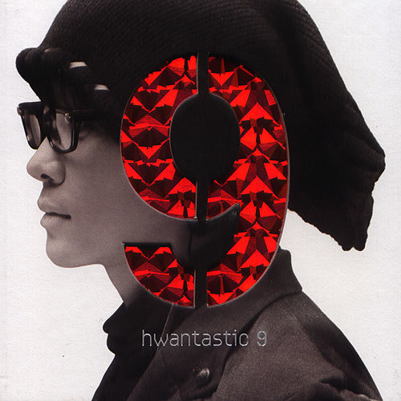

안녕하세요, 라보엠입니다.
오늘은 이승환의 대표 발라드 ‘어떻게 사랑이 그래요’를 소개합니다. 벌써 20년이 가까이 되었네요. 2006년 9집 [Hwantastic]의 타이틀곡으로 발표된 이 곡은, 이승환 특유의 섬세한 감성, 그리고 진정성 있는 가사와 멜로디로 지금까지도 많은 이들의 사랑을 받고 있습니다. 단순한 이별 노래를 넘어, 사랑의 숭고함과 그리움, 그리고 남겨진 사람의 마음을 깊이 있게 그려낸 곡입니다.

곡의 탄생과 배경
‘어떻게 사랑이 그래요’는 발매 이후 수많은 이별의 순간에 위로와 공감을 전해온 곡입니다. 시간이 흘러도 변치 않는 감동, 그리고 사랑의 본질에 대한 질문을 던지는 이 노래는, 이승환의 라이브 무대와 각종 방송에서 꾸준히 소개되며 세대를 초월해 사랑받고 있습니다.
이 노래는 이승환의 깊고 담백한 보컬이 곡의 감정선을 이끌어갑니다. 절제된 피아노와 스트링, 그리고 점차 고조되는 멜로디는 듣는 이의 마음을 자연스럽게 곡 안으로 이끕니다. 후반부로 갈수록 터져 나오는 감정의 폭발력은, 이승환 특유의 호소력 짙은 목소리와 어우러져 더욱 진한 여운을 남깁니다. 특히 이 곡은 황성제와의 협업으로 완성도를 높였으며, 이승환이 직접 작사·작곡에 참여해 자신의 진심을 온전히 담아냈다는 점에서 더욱 의미가 깊습니다.
곡의 모티브가 된 실제 이야기
이 곡은 특히 실제 휴먼 다큐멘터리에서 영감을 받아 만들어진 곡입니다. 이승환은 2006년 MBC에서 방영된 ‘휴먼다큐 사랑 – 너는 내 운명’ 편을 보고, 죽음조차 갈라놓지 못한 두 남녀의 이야기에 깊은 감동을 받았다고 밝혔습니다. 9살의 나이 차이와 환경의 차이를 극복하고, 끝내 사랑을 지켜낸 두 사람의 이야기는 이승환에게 큰 울림을 주었고, 그는 이 감정을 곡에 고스란히 녹여냈습니다.
이 곡의 모티브가 된 실제 이야기는 더욱 가슴을 울립니다.
- 9살의 나이 차이와 환경의 차이를 극복한 두 남녀,
- 말기 암 선고를 받고도 끝까지 서로를 지켜준 사랑,
- 결혼식을 앞두고 세상을 떠난 영란씨와, 그녀 곁을 끝까지 지킨 창원씨의 이야기.
이승환은 이들의 숭고한 사랑에 혹여 누가 될까봐 가사를 여러 번 고치고, 3개월에 걸쳐 곡을 완성했다고 밝혔습니다. 곡을 듣는 내내, 사랑이란 무엇인지, 그리고 이별의 아픔을 어떻게 견뎌야 하는지에 대한 깊은 질문을 던지게 합니다.
이승환 어떻게 사랑이 그래요 - 가사에 담긴 사랑의 본질
사랑이 잠시 쉬어간대요
나를 허락한 고마움
갚지도 못했는데
은혤 잊고 살아
미안한 마음뿐인데
마지막 사람일거라
확인하며 또 확신했는데
욕심이었나 봐요
나는 그댈 갖기에도
놓아주기에도 모자라요
우린 어떻게든 무엇이 되어 있건
다시 만나 사랑해야 해요
그 때까지 다른 이를 사랑하지 마요
어떻게 사랑이 그래요
사랑한단 말 만번도 넘게
백년도 넘게 남았는데
그렇게 운명이죠 우린
악연이라 해도 인연이라 해도 우린
우린 어떻게든 무엇이 되어 있건
다시 만나 사랑해야 해요
그 때까지 다른 이를 사랑하지 마요
안 돼요 안 돼요
그대는 나에게
끝없는 이야기 간절한 그리움
행복한 거짓말 은밀한 그 약속
그 약속을 지켜줄 내 사람
너만을 사랑해 너만을 기억해
너만이 필요해 그게 너란 말야
너만의 나이길 우리만의 약속
그 약속을 지켜줄 내 사람
너만을 사랑해 너만을 기억해
너만이 필요해 그게 너란 말야
우리만의 약속
그 약속을 지켜줄 내 사람
너만을 사랑해 너만을 기억해
너만이 필요해 그게 너란 말야
이 곡의 가사는 사랑의 시작과 끝, 그리고 그 사이에 존재하는 모든 감정을 섬세하게 담고 있습니다.
- “사랑이 잠시 쉬어간대요 나를 허락한 고마움 갚지도 못했는데”
- “마지막 사랑일 거라 확인하며 또 확신했는데 욕심이었나 봐요”
- “우린 어떻게든 무엇이 되어 있건 다시 만나 사랑해야 해요”
이별을 받아들일 수밖에 없는 현실, 하지만 여전히 남아 있는 사랑과 그리움이 절절하게 전해집니다. 특히 “그때까지 다른 이를 사랑하지 마요, 어떻게 사랑이 그래요”라는 후렴구는, 사랑이란 쉽게 식지 않는 감정임을, 그리고 그 아픔이 얼마나 오래 남는지를 고백하고 있습니다.
맺음말
이승환의 ‘어떻게 사랑이 그래요’는 사랑의 시작과 끝, 그리고 그 사이의 모든 감정을 섬세하게 담아낸 발라드의 명곡입니다. 이 곡을 듣고 있으면, 지나간 사랑에 대한 아련한 그리움과 함께, 앞으로의 사랑을 더욱 소중히 여기고 싶어집니다. 오늘 하루, 이 곡과 함께 자신의 사랑과 이별, 그리고 남겨진 마음을 다시 한 번 돌아보는 시간을 가져보는 건 어떨까요? 이 노래가 여러분의 하루에 따뜻한 위로와 깊은 여운이 되길 바랍니다.